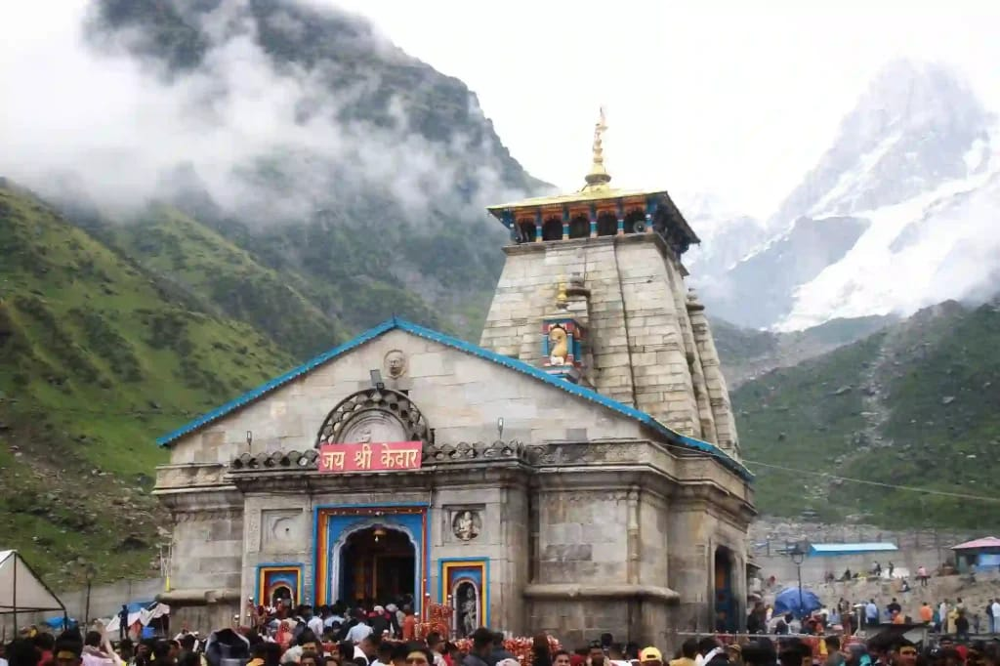
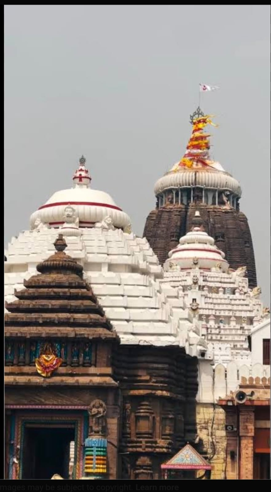
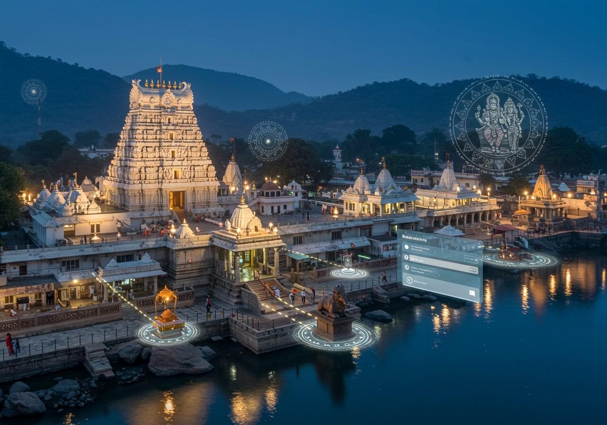

Tirupati Balaji Temple

Location
Tirupati, Andhra Pradesh, India
Main Deity
Lord Venkateswara (Balaji)
Historical Background
Tirupati Balaji Temple is one of the most famous Hindu temples in India. It is located on the Tirumala Hills and attracts millions of pilgrims every year. The temple is dedicated to Lord Venkateswara, an incarnation of Lord Vishnu.
Darshan Timings
3:00 AM – 11:00 PM
Important Festivals
- Brahmotsavam
- Vaikunta Ekadasi
- Rathasapthami
- Pavitrotsavam
Daily Rituals
- Suprabhatam
- Thomala Seva
- Archana
- Kalyanotsavam
Dress Code
Men: Dhoti, Kurta, Shirt & Pant
Women: Saree, Salwar Kameez, Traditional Dress
Visitor Guidelines
- Maintain silence inside temple premises.
- Follow queue guidelines.
- Wear traditional and decent clothing.
- Photography may be restricted inside the temple.
Nearby Facilities
- Accommodation & Guest Houses
- Restaurants & Food Courts
- Bus Stand & Railway Station
- Medical Facilities
Meenakshi Amman Temple

Location
Madurai, Tamil Nadu, India
Main Deity
Goddess Meenakshi and Lord Sundareswarar
Historical Background
Meenakshi Amman Temple is one of the most famous and ancient temples in India. Located in Madurai, Tamil Nadu, the temple is dedicated to Goddess Meenakshi, a form of Goddess Parvati, and Lord Sundareswarar, a form of Lord Shiva. The temple is renowned for its magnificent architecture, towering gopurams, and rich cultural heritage.
Darshan Timings
5:00 AM – 12:30 PM & 4:00 PM – 10:00 PM
Important Festivals
- Meenakshi Tirukalyanam
- Chithirai Festival
- Navaratri
- Shivaratri
Daily Rituals
- Thiruvanandal Pooja
- Kalasandhi Pooja
- Uchikala Pooja
- Arthajama Pooja
Dress Code
Men: Dhoti, Shirt, Kurta & Traditional Wear
Women: Saree, Salwar Kameez, Traditional Dress
Visitor Guidelines
- Maintain silence inside the temple premises.
- Remove footwear before entering.
- Wear modest and traditional clothing.
- Photography may be restricted in certain areas.
Nearby Facilities
- Accommodation & Hotels
- Restaurants & Food Courts
- Bus Stand & Railway Station
- Medical Facilities
Kedarnath Temple

Location
Kedarnath, Uttarakhand, India
Main Deity
Lord Shiva
Historical Background
Kedarnath Temple is one of the holiest Hindu temples dedicated to Lord Shiva. It is located in the Garhwal Himalayas near the Mandakini River. The temple is believed to have been built by the Pandavas and later revived by Adi Shankaracharya. It is one of the twelve Jyotirlingas and an important part of the Char Dham Yatra.
Darshan Timings
4:00 AM – 9:00 PM (Seasonal Opening)
Important Festivals
- Maha Shivaratri
- Badri-Kedar Festival
- Shravan Month Celebrations
- Kedarnath Opening & Closing Ceremony
Daily Rituals
- Mahabhishek
- Rudrabhishek
- Laghu Rudrabhishek
- Evening Aarti
Dress Code
Men: Traditional Wear, Dhoti, Kurta, Shirt & Pant
Women: Saree, Salwar Kameez, Traditional Dress
Visitor Guidelines
- Carry warm clothes due to cold weather.
- Follow temple and trekking guidelines.
- Maintain cleanliness and silence.
- Photography may be restricted inside the temple.
Nearby Facilities
- Accommodation & Guest Houses
- Medical Facilities
- Food Stalls & Restaurants
- Helicopter Services
Jagannath Temple

Location
Puri, Odisha, India
Main Deity
Lord Jagannath, Lord Balabhadra, and Goddess Subhadra
Historical Background
Jagannath Temple is one of the most sacred Hindu temples in India. Built in the 12th century by King Anantavarman Chodaganga Deva, the temple is famous for its annual Rath Yatra festival and is one of the Char Dham pilgrimage sites.
Darshan Timings
5:00 AM – 11:00 PM
Important Festivals
- Rath Yatra
- Snana Yatra
- Chandan Yatra
- Makar Sankranti
Daily Rituals
- Mangala Aarti
- Mailam
- Gopal Ballav Bhog
- Sandhya Dhupa
Dress Code
Men: Dhoti, Kurta, Shirt & Pant
Women: Saree, Salwar Kameez, Traditional Dress
Konark Sun Temple

Location
Konark, Odisha, India
Main Deity
Lord Surya (Sun God)
Historical Background
Konark Sun Temple is a UNESCO World Heritage Site built in the 13th century by King Narasimhadeva I. The temple is designed in the shape of a giant chariot with intricately carved stone wheels and horses dedicated to the Sun God.
Visiting Timings
6:00 AM – 8:00 PM
Important Festivals
- Konark Dance Festival
- Chandrabhaga Mela
- Ratha Saptami
- Makar Sankranti
Special Attractions
- Stone Chariot Architecture
- Intricate Stone Carvings
- Sun Temple Museum
- UNESCO World Heritage Site
Visitor Guidelines
- Maintain cleanliness around the monument.
- Do not climb on protected structures.
- Follow ASI guidelines.
- Carry water during summer visits.
Ramanathaswamy Temple

Location
Rameswaram, Tamil Nadu, India
Main Deity
Lord Ramanathaswamy (Shiva)
Historical Background
Ramanathaswamy Temple is one of the twelve Jyotirlinga temples of Lord Shiva. According to Hindu mythology, Lord Rama worshipped Lord Shiva here after defeating Ravana. The temple is famous for its magnificent corridors and sacred wells.
Darshan Timings
5:00 AM – 1:00 PM & 3:00 PM – 9:00 PM
Important Festivals
- Maha Shivaratri
- Arudra Darshan
- Navaratri
- Thirukalyanam
Daily Rituals
- Spatika Lingam Darshan
- Kalasanthi Pooja
- Uchikala Pooja
- Arthajama Pooja
Somnath Temple

Location
Prabhas Patan, Gujarat, India
Main Deity
Lord Somnath (Shiva)
Historical Background
Somnath Temple is the first among the twelve Jyotirlingas of Lord Shiva. Located on the Arabian Sea coast, the temple has been rebuilt several times throughout history and stands as a symbol of faith and resilience.
Darshan Timings
6:00 AM – 10:00 PM
Important Festivals
- Maha Shivaratri
- Kartik Purnima
- Shravan Month Celebrations
- Somvati Amavasya
Daily Rituals
- Mangala Aarti
- Morning Aarti
- Midday Aarti
- Evening Aarti
Srisailam Temple

Location
Srisailam, Andhra Pradesh, India
Main Deity
Lord Mallikarjuna (Shiva) and Goddess Bhramaramba
Historical Background
Srisailam Temple is one of the twelve Jyotirlingas of Lord Shiva and one of the eighteen Shakti Peethas. Situated on the Nallamala Hills, it is one of the most important pilgrimage centers in India.
Darshan Timings
4:30 AM – 10:00 PM
Important Festivals
- Maha Shivaratri
- Ugadi
- Dasara
- Karthika Masam
Daily Rituals
- Suprabhata Seva
- Abhishekam
- Archana
- Harathi
Vaishno Devi Temple

Location
Katra, Jammu and Kashmir, India
Main Deity
Goddess Vaishno Devi
Historical Background
Vaishno Devi Temple is one of the most revered Hindu pilgrimage sites in India. Located in the Trikuta Hills, devotees undertake a sacred trek to seek the blessings of Goddess Vaishno Devi.
Darshan Timings
Open 24 Hours
Important Festivals
- Navaratri
- Diwali
- Ram Navami
- Makar Sankranti
Daily Rituals
- Morning Aarti
- Evening Aarti
- Bhajans
- Special Pujas